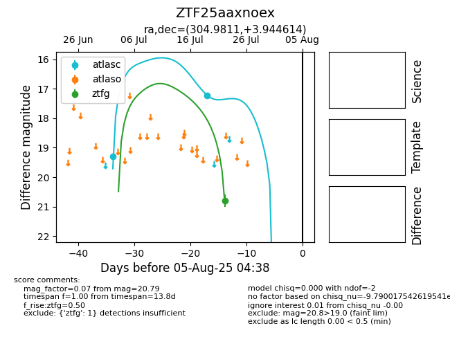

Target ZTF25aaxnoex at 2025-08-05 04:38, see:
FINK: fink-portal.org/ZTF25aaxnoex
Lasair: lasair-ztf.lsst.ac.uk/objects/ZTF25aaxnoex
ALeRCE: alerce.online/object/ZTF25aaxnoex
alt names
ZTF25aaxnoex (ztf,fink)
coordinates:
equatorial (ra, dec) = (304.9811,+3.94461)
galactic (l, b) = (47.0545,-17.63691)
photometry
last atlasc=17.23, ztfg=20.79
2 atlasc, 1 ztfg detections
